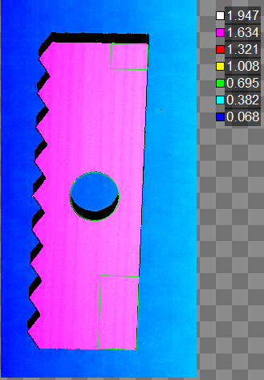

Trong đo lường 3D, công cụ đo chiều cao chủ yếu dùng để lấy khoảng cách chiều cao từ các điểm trong không gian 3D thuộc vùng kiểm tra trong tập điểm đầu vào hoặc ảnh độ sâu đến mặt phẳng chuẩn được chỉ định, đồng thời thực hiện thống kê các thông tin chiều cao như giá trị nhỏ nhất, giá trị lớn nhất, giá trị trung bình, giá trị trung vị, giúp người dùng thu được phân bố khoảng cách chiều cao một cách chính xác hơn. Chiều cao từ một điểm 3D (điểm ảnh của ảnh độ sâu) đến mặt phẳng chuẩn được thể hiện như trong Hình 1.
Hình 2 thể hiện sơ đồ minh họa công cụ đo chiều cao. Trong công cụ đo chiều cao, hỗ trợ chế độ ROI đơn và chế độ nhiều ROI, đồng thời có thể cấu hình hình dạng và đặc trưng của vùng đo chiều cao. Như trong Hình 2, có tổng cộng ba vùng đo, hình dạng của ba vùng này lần lượt là hình chữ nhật, hình chữ nhật affine, hình tròn, đồng thời có thể đo riêng các điểm đặc trưng trong ba vùng này (như giá trị trung bình, giá trị trung vị, v.v.) hoặc thông tin thống kê giá trị chiều cao của toàn bộ dữ liệu đến mặt phẳng chuẩn.

| Tên tham số | Mô tả tham số |
|---|---|
| Ảnh độ sâu | Hiển thị ảnh độ sâu cần kiểm tra, được hiển thị dưới dạng ảnh giả màu. |
| Mặt phẳng chuẩn | Chọn mặt phẳng chuẩn dùng để đo chiều cao. |
| Biến đổi tuyến tính 2D | Biến đổi tịnh tiến, xoay và thu phóng của đối tượng so với mẫu. |
| Chế độ | Chia thành ba loại: chế độ ROI đơn, chế độ nhiều ROI, chế độ tập điểm |
| Đảo chiều tính toán | Khi chọn “Có”, dấu của giá trị tính toán chiều cao sẽ bị đảo, chủ yếu áp dụng trong các trường hợp như rãnh, độ dày, trong đó chiều cao tính theo hướng xuống được xem là dương. |
| Bù hệ số | Bù hệ số cho kết quả đo, thông thường là 1, dùng để bù sai số hệ thống như sai số tạo ảnh. |
| Bù cố định | Bù cố định cho kết quả đo, thông thường là 0, dùng để bù sai số hệ thống như sai số tạo ảnh. |
| Giới hạn trên của giá trị chiều cao lớn nhất | Phạm vi giá trị là [-100, 100], và giới hạn dưới phải nhỏ hơn hoặc bằng giới hạn trên. |
| Giới hạn dưới của giá trị chiều cao lớn nhất | Phạm vi giá trị là [-100, 100], và giới hạn dưới phải nhỏ hơn hoặc bằng giới hạn trên. |
| Giới hạn trên của giá trị chiều cao nhỏ nhất | Phạm vi giá trị là [-100, 100], và giới hạn dưới phải nhỏ hơn hoặc bằng giới hạn trên. |
| Giới hạn dưới của giá trị chiều cao nhỏ nhất | Phạm vi giá trị là [-100, 100], và giới hạn dưới phải nhỏ hơn hoặc bằng giới hạn trên. |
| Giới hạn trên của giá trị trung bình chiều cao | Phạm vi giá trị là [-100, 100], và giới hạn dưới phải nhỏ hơn hoặc bằng giới hạn trên. |
| Giới hạn dưới của giá trị trung bình chiều cao | Phạm vi giá trị là [-100, 100], và giới hạn dưới phải nhỏ hơn hoặc bằng giới hạn trên. |
| Giới hạn trên của giá trị trung vị chiều cao | Phạm vi giá trị là [-100, 100], và giới hạn dưới phải nhỏ hơn hoặc bằng giới hạn trên. |
| Giới hạn dưới của giá trị trung vị chiều cao | Phạm vi giá trị là [-100, 100], và giới hạn dưới phải nhỏ hơn hoặc bằng giới hạn trên. |
| Loại ROI đơn | Vùng cần kiểm tra, chia thành 7 loại: toàn bộ ảnh, hình chữ nhật, hình chữ nhật affine, hình tròn, vành khuyên, hình elip, đa giác. |
| Bật mặt nạ | Có bật mặt nạ hay không, chọn “Có” sẽ hiển thị các tham số như số lượng mặt nạ, số thứ tự mặt nạ, hình dạng mặt nạ. |
| Số lượng mặt nạ | Thiết lập số lượng mặt nạ được bật, phạm vi giá trị là [1, 99]. |
| Số thứ tự mặt nạ | Chỉ số mặt nạ hiện tại cần thiết lập. |
| Loại mặt nạ | Hình dạng mặt nạ hiện tại cần thiết lập, chia thành 6 loại: hình chữ nhật, hình chữ nhật affine, hình tròn, vành khuyên, hình elip, đa giác. |
| Phân vị đuôi thấp | Tham số tỷ lệ dùng để tính đuôi thấp, phạm vi giá trị là [0,1], và tổng phân vị đuôi cao và đuôi thấp phải nhỏ hơn hoặc bằng 1, tham khảo tham số đuôi thấp trong cửa sổ giám sát. |
| Phân vị đuôi cao | Tham số tỷ lệ dùng để tính đuôi cao, phạm vi giá trị là [0,1], tham khảo tham số đuôi thấp trong cửa sổ giám sát, và tổng phân vị đuôi cao và đuôi thấp phải nhỏ hơn hoặc bằng 1, tham khảo tham số đuôi cao trong cửa sổ giám sát. |
| Bật bộ lọc phạm vi chiều cao | Chọn “Có”, thì dữ liệu chiều cao đã tính được sẽ được lọc theo phạm vi chiều cao, đồng thời hiển thị tham số giới hạn dưới và giới hạn trên của phạm vi chiều cao. |
| Giới hạn dưới của phạm vi chiều cao | Giới hạn dưới của phạm vi chiều cao, và giới hạn dưới chiều cao phải nhỏ hơn hoặc bằng giới hạn trên chiều cao, dùng để lọc dữ liệu chiều cao đã tính được theo phạm vi chiều cao. |
| Giới hạn trên của phạm vi chiều cao | Giới hạn trên của phạm vi chiều cao, và giới hạn dưới chiều cao phải nhỏ hơn hoặc bằng giới hạn trên chiều cao, dùng để lọc dữ liệu chiều cao đã tính được theo phạm vi chiều cao. |
| Bao gồm các giá trị trong phạm vi chiều cao | Chọn “Có”, thì bao gồm các giá trị nằm trong phạm vi chiều cao, nếu không thì loại trừ các giá trị nằm trong phạm vi chiều cao. |
| Số lượng ROI | Tham số này dùng để chỉ định số lượng vùng đo, hỗ trợ tối đa 100 ROI. |
| Chỉ số ROI | Tham số này dùng để chọn vùng đo thứ i và thiết lập tham số cho vùng đó. |
| Loại nhiều ROI | Vùng cần kiểm tra, chia thành 7 loại: toàn bộ ảnh, hình chữ nhật, hình chữ nhật affine, hình tròn, vành khuyên, hình elip, đa giác. |
| Thuộc tính giống nhau | Chọn “Có”, đồng bộ kích thước, hình dạng, giới hạn trên/dưới của khoảng, giới hạn trên/dưới của khoảng kết quả của tất cả ROI |
| Đặc trưng điểm đo | Chọn một loại điểm đặc trưng trong vùng ROI để đo chiều cao, chia thành 6 loại: giá trị trung bình, giá trị trung vị, trọng tâm, Z lớn nhất, Z nhỏ nhất, toàn bộ dữ liệu. |
| Giới hạn trên, dưới của khoảng | Dữ liệu độ sâu của vùng đo được sắp xếp theo thành phần Z từ nhỏ đến lớn, sau đó lấy các điểm đặc trưng như giá trị trung bình, giá trị trung vị của dữ liệu độ sâu nằm trong start% ~ end%. Phạm vi giá trị là giới hạn dưới [0,100), giới hạn trên (0,100], và giới hạn dưới nhỏ hơn giới hạn trên. |
| Giới hạn trên, dưới của khoảng kết quả | Giá trị chiều cao của kết quả đo được sắp xếp từ nhỏ đến lớn, sau đó lấy các điểm đặc trưng như giá trị trung bình, giá trị trung vị của giá trị chiều cao nằm trong start% ~ end%. Phạm vi giá trị là giới hạn dưới [0,100), giới hạn trên (0,100], và giới hạn dưới nhỏ hơn giới hạn trên. |
| Giới hạn trên, dưới của khoảng kết quả thống kê | Kết quả chiều cao đo được của tất cả vùng ROI được sắp xếp từ nhỏ đến lớn, sau đó lấy các điểm đặc trưng như giá trị trung bình, giá trị trung vị của giá trị chiều cao nằm trong start% ~ end%, dùng cho đầu ra thống kê của kết quả đo tổng thể. Phạm vi giá trị là giới hạn dưới [0,100), giới hạn trên (0,100], và giới hạn dưới nhỏ hơn giới hạn trên. |
| Giới hạn trên của giá trị chiều cao lớn nhất thống kê | Phạm vi giá trị là [-100, 100], và giới hạn dưới phải nhỏ hơn hoặc bằng giới hạn trên. |
| Giới hạn dưới của giá trị chiều cao lớn nhất thống kê | Phạm vi giá trị là [-100, 100], và giới hạn dưới phải nhỏ hơn hoặc bằng giới hạn trên. |
| Giới hạn trên của giá trị chiều cao nhỏ nhất thống kê | Phạm vi giá trị là [-100, 100], và giới hạn dưới phải nhỏ hơn hoặc bằng giới hạn trên. |
| Giới hạn dưới của giá trị chiều cao nhỏ nhất thống kê | Phạm vi giá trị là [-100, 100], và giới hạn dưới phải nhỏ hơn hoặc bằng giới hạn trên. |
| Giới hạn trên của giá trị trung bình chiều cao thống kê | Phạm vi giá trị là [-100, 100], và giới hạn dưới phải nhỏ hơn hoặc bằng giới hạn trên. |
| Giới hạn dưới của giá trị trung bình chiều cao thống kê | Phạm vi giá trị là [-100, 100], và giới hạn dưới phải nhỏ hơn hoặc bằng giới hạn trên. |
| Giới hạn trên của giá trị trung vị chiều cao thống kê | Phạm vi giá trị là [-100, 100], và giới hạn dưới phải nhỏ hơn hoặc bằng giới hạn trên. |
| Giới hạn dưới của giá trị trung vị chiều cao thống kê | Phạm vi giá trị là [-100, 100], và giới hạn dưới phải nhỏ hơn hoặc bằng giới hạn trên. |
| Tên tham số | Mô tả tham số |
|---|---|
| Ảnh độ sâu | Chiều dài, chiều rộng và kích thước pixel của ảnh, cùng với các tham số dữ liệu độ sâu. |
| Giá trị trung bình | Giá trị chiều cao trung bình của dữ liệu chiều cao. |
| Giá trị trung vị | Sau khi sắp xếp dữ liệu chiều cao, là dữ liệu chiều cao nằm ở vị trí giữa. |
| Giá trị nhỏ nhất | Giá trị chiều cao nhỏ nhất trong dữ liệu chiều cao. |
| Giá trị lớn nhất | Giá trị chiều cao lớn nhất trong dữ liệu chiều cao. |
| Đuôi thấp | Giá trị chiều cao sao cho lượng dữ liệu nhỏ hơn một giá trị nào đó đạt tỷ lệ được chỉ định (phân vị đuôi thấp). |
| Đuôi cao | Giá trị chiều cao sao cho lượng dữ liệu lớn hơn một giá trị nào đó đạt tỷ lệ được chỉ định (phân vị đuôi cao). |
| Số lượng pixel trong khung bao vùng | Số lượng pixel (bao gồm pixel không hợp lệ) trong hình chữ nhật bao ngoài nhỏ nhất của vùng quan tâm. |
| Số lượng pixel quan tâm | Số lượng pixel (bao gồm pixel không hợp lệ) trong hình dạng vùng quan tâm. |
| Số lượng pixel quan tâm khả kiến | Số lượng pixel hợp lệ trong hình dạng vùng quan tâm. |
| Số lượng pixel sử dụng | Số lượng pixel thực tế được dùng để đo chiều cao trong vùng quan tâm. |
| Kết quả đo chiều cao | Hiển thị kết quả đo chiều cao của từng vùng đo, bao gồm giá trị chiều cao lớn nhất, nhỏ nhất, trung bình, trung vị trong từng vùng đo, cũng như kết quả thống kê của kết quả đo trên tất cả vùng đo. |
| Giá trị chiều cao lớn nhất | Đầu ra giá trị chiều cao lớn nhất trong ROI, vị trí cuối cùng là giá trị lớn nhất của kết quả thống kê. |
| Giá trị chiều cao nhỏ nhất | Đầu ra giá trị chiều cao nhỏ nhất trong ROI, vị trí cuối cùng là giá trị nhỏ nhất của kết quả thống kê. |
| Giá trị trung bình chiều cao | Đầu ra giá trị trung bình chiều cao trong ROI, vị trí cuối cùng là giá trị trung bình của kết quả thống kê. |
| Giá trị trung vị chiều cao | Đầu ra giá trị trung vị chiều cao trong ROI, vị trí cuối cùng là giá trị trung vị của kết quả thống kê. |
| Kết quả phán định ROI | Kết quả phán định giá trị đo chiều cao của từng ROI. |
| Kết quả thực thi | Kết quả thực thi của công cụ. |
| Thời gian thực thi | Thời gian thực thi của công cụ. |
Việc thiết lập mặt phẳng chuẩn thực chất là chọn một vùng quan tâm trên ảnh độ sâu để lấy các điểm dữ liệu 3D, sau đó thực hiện khớp mặt phẳng theo hướng mặt phẳng và phương pháp khớp. Theo mặc định, mặt phẳng chuẩn là mặt phẳng XOY.
Giả sử phạm vi khoảng là [start%, end%], thì chỉ dữ liệu nằm trong phạm vi khoảng mới hợp lệ; như trong Hình 3(a), khi cấu hình tham số cho vùng đo, dữ liệu độ sâu trong vùng được sắp xếp theo thành phần Z từ nhỏ đến lớn, sau đó lấy các điểm đặc trưng như giá trị trung bình, giá trị trung vị của dữ liệu độ sâu nằm trong start% ~ end%; như trong Hình 3(b), trong kết quả đo chiều cao, các giá trị chiều cao được sắp xếp từ nhỏ đến lớn, sau đó lấy giá trị trung bình, giá trị trung vị, v.v. của giá trị chiều cao nằm trong start% ~ end%.

Bước 1 Thiết lập vùng đo và mặt nạ
Để lấy dữ liệu điểm không gian 3D, cần thiết lập vùng đo và mặt nạ. Trong đó, hình dạng vùng đo hỗ trợ sáu kiểu thiết lập như hình tròn, hình elip, đa giác, hình chữ nhật, hình chữ nhật affine hoặc vùng vành khuyên; mặt nạ hỗ trợ thiết lập số lượng tùy ý của sáu loại vùng như hình tròn, hình elip, đa giác, hình chữ nhật, hình chữ nhật affine và vùng vành khuyên; lúc này, phép đo chiều cao sử dụng dữ liệu điểm không gian 3D nằm trong hình dạng vùng đo sau khi loại trừ vùng mặt nạ.
Bước 2 Thiết lập thống kê histogram
Thiết lập thống kê histogram chủ yếu bao gồm: thiết lập tham số và thiết lập bộ lọc phạm vi chiều cao. Thiết lập tham số là thiết lập ba tham số gồm phân vị đuôi thấp, phân vị đuôi cao và hệ số StdDev. Thiết lập bộ lọc phạm vi chiều cao chủ yếu là lọc dữ liệu chiều cao đã tính được, có thể chỉ định một phạm vi chiều cao và xác định chế độ lọc phạm vi chiều cao là bao gồm các giá trị trong phạm vi chiều cao hay loại trừ các giá trị trong phạm vi chiều cao.
Bước 3 Thực hiện đo và xuất kết quả
Sau khi lấy dữ liệu điểm không gian 3D, thực hiện đo có thể thu được dữ liệu chiều cao và hoàn tất thống kê thông tin chiều cao, xuất ra các kết quả như histogram chiều cao, giá trị nhỏ nhất, giá trị lớn nhất, giá trị trung bình, giá trị trung vị, độ lệch chuẩn, đuôi thấp và đuôi cao, cũng như kết quả đếm pixel.
Bước 4 Bù và phán định kết quả
Nếu cần bù hoặc phán định kết quả tính toán, có thể thiết lập bù hệ số, bù cố định, căn cứ phán định, giá trị lớn nhất, giá trị nhỏ nhất.
Bước 1 Thiết lập tham số của vùng đo
Chủ yếu cần thiết lập số lượng vùng đo, hình dạng, loại điểm đặc trưng trong vùng và phạm vi khoảng. Trong đó, người dùng có thể tự chỉ định số lượng vùng đo; hình dạng vùng đo được chia thành 7 loại: toàn bộ ảnh, hình chữ nhật, hình chữ nhật affine, hình tròn, vành khuyên, hình elip, đa giác; loại điểm đặc trưng trong vùng đo được chia thành 6 loại: giá trị trung bình, giá trị trung vị, trọng tâm, Z lớn nhất, Z nhỏ nhất, toàn bộ dữ liệu.
Bước 2 Thiết lập tham số kết quả đo chiều cao
Tiếp theo cần thiết lập tham số kết quả đo chiều cao của từng vùng đo. Tham số cần thiết lập gồm: phạm vi khoảng. Người dùng có thể thiết lập các tham số này theo nhu cầu thực tế của dự án.
Bước 3 Thực hiện đo chiều cao và xuất kết quả
Sau các bước trên, có thể thực hiện đo chiều cao. Kết quả đầu ra của phép đo chiều cao chủ yếu bao gồm: giá trị đặc trưng chiều cao trong từng vùng đo (giá trị lớn nhất, giá trị nhỏ nhất, giá trị trung bình, giá trị trung vị) và một kết quả thống kê của các giá trị đặc trưng chiều cao trong tất cả vùng đo.
Bước 4 Bù và phán định kết quả
Nếu cần bù hoặc phán định kết quả tính toán, có thể thiết lập bù hệ số, bù cố định, căn cứ phán định, giá trị lớn nhất, giá trị nhỏ nhất.
Bước 1 Thiết lập tập điểm đầu vào
Nhập tập điểm 3D qua liên kết dữ liệu hoặc thiết lập tập điểm 3D của liên kết dữ liệu bằng script.
Bước 2 Thiết lập thống kê histogram
Thiết lập thống kê histogram chủ yếu bao gồm: thiết lập tham số và thiết lập bộ lọc phạm vi chiều cao. Thiết lập tham số là thiết lập ba tham số gồm phân vị đuôi thấp, phân vị đuôi cao và hệ số StdDev. Thiết lập bộ lọc phạm vi chiều cao chủ yếu là lọc dữ liệu chiều cao đã tính được, có thể chỉ định một phạm vi chiều cao và xác định chế độ lọc phạm vi chiều cao là bao gồm các giá trị trong phạm vi chiều cao hay loại trừ các giá trị trong phạm vi chiều cao.
Bước 3 Thực hiện đo và xuất kết quả
Sau khi lấy dữ liệu điểm không gian 3D, thực hiện đo có thể thu được dữ liệu chiều cao và hoàn tất thống kê thông tin chiều cao, xuất ra các kết quả như histogram chiều cao, giá trị nhỏ nhất, giá trị lớn nhất, giá trị trung bình, giá trị trung vị, độ lệch chuẩn, đuôi thấp và đuôi cao, cũng như kết quả đếm pixel.
Bước 4 Bù và phán định kết quả
Nếu cần bù hoặc phán định kết quả tính toán, có thể thiết lập bù hệ số, bù cố định, căn cứ phán định, giá trị lớn nhất, giá trị nhỏ nhất.
Tham khảo “\Samples\3D\Depth Image\Universal Height Measurement Tool.gvp”.